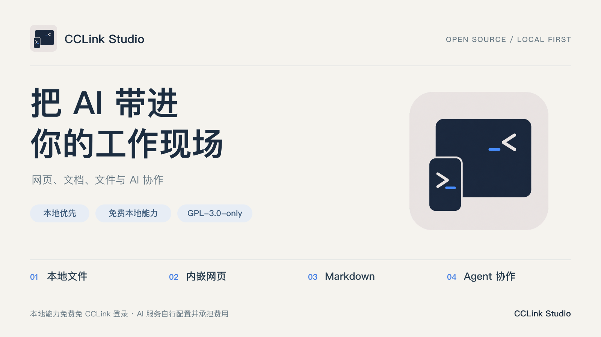

CCLink Studio 官网首页文案

首屏
把 AI、网页和文档，放进同一个工作空间。
CCLink Studio 是一款开源、本地优先的 AI 桌面工作台。打开本地文件夹，浏览资料、编辑 Markdown、运行命令，与 AI 一起推进手头的工作。
本地能力免费 · 免 CCLink 登录 · GPL-3.0-only · 当前支持 macOS
工作空间
围绕一件事情组织资料。
把本地文件、网页、草稿和 AI 会话放进同一个工作空间。保存工作状态，之后回来继续。

真实开发版界面，文档为演示材料，Agent 指令处于待发送状态。
Agent 协作
让讨论接到实际操作上。
配置 Agent 后，通过工具读取和修改指定文档、操作授权网页，把讨论逐步变成可以检查和保存的成果。
浏览器
网页就在眼前，需要时由你接手。
在内嵌浏览器中查阅资料，也可以让 Agent 在授权范围内执行网页操作。查看页面变化，中断任务，在需要时接管。

真实内嵌浏览器与原创演示网页，展示浏览和任务准备位置。
本地使用与 AI 配置
从本地开始，按自己的需要配置。
本地工作台免费，免 CCLink 账号登录。当前完整工具 Agent 以 Claude Code 后端为基础；模型账号、API 和调用费用由用户自行配置和承担。远程服务通过独立入口按需登录。
开源参与
一起把日常工作中的麻烦解决好。
查看源码，从一个具体任务开始体验。欢迎提交反馈、完善文档和参与开发。